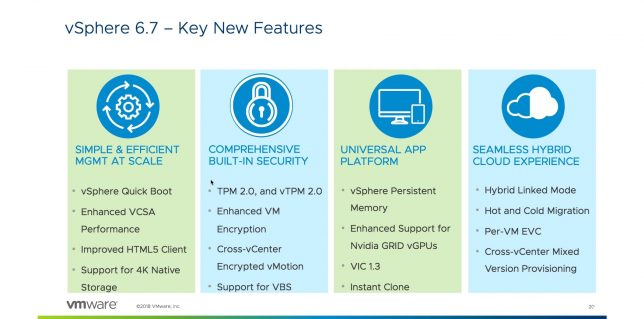
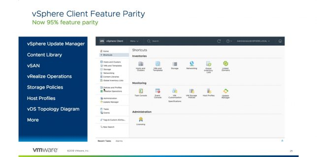
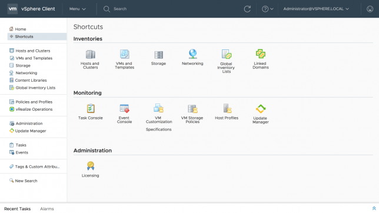
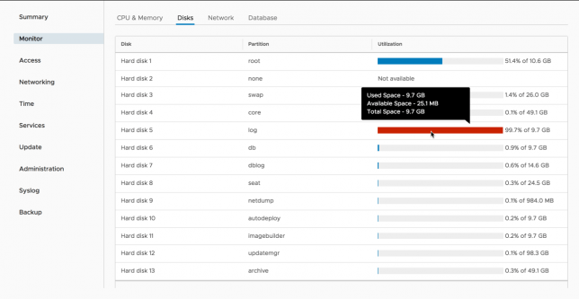
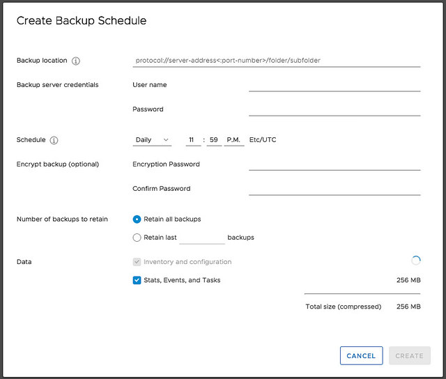
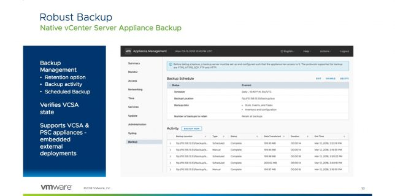
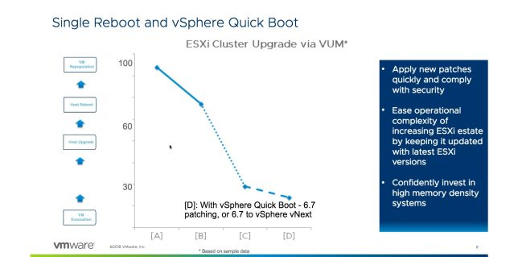
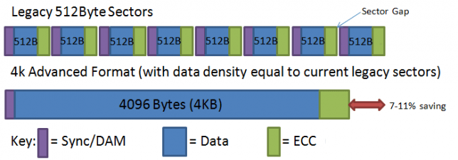

VMware vSphere 6.7 - Novidades - Parte 1
Blog VMwareCompartilhe esse post nas redes sociais...
Olá Homelabers!
Ontem a VMware anunciou o GA (General Availability) do VMware vSphere 6.7
Quase um ano e meio após o release do VMware vSphere 6.5 e um dia após o seu aniversário de 20 anos essa nova versão está cheia de novidades e melhorias.
Nesse post, vou descrever brevemente as features que eu acredito que devam ser discutidas e mencionadas.
* O vSphere Client (HTML5) tem cerca de 95% de recursos completos
* Monitoramento aprimorado do vCenter appliance (VCSA)
* Melhor gerenciamento de backup do vCenter
* Atualizações do ESXi com Single Reboot
* Inicialização rápida do ESXi
* Suporte nativo para discos 4K

vSphere Client HTML5
O vSphere 6.7 marca a versão final do vSphere Web Client (Flash)

Essa é uma feature na wishlist de muita gente. Desde a versão 6.5 quando a VMware anunciou a morte do “Fat Client” e o desenvolvimento de um client 100% baseado em HTML5 muita coisa evoluiu.
Infelizmente o Client HTML5 ainda não está 100% operacional, mas segundo a VMware nesse release teremos certa de 95% das funcionalidades implantadas e a VMware promete que novas funcionalidades serão incluídas nos próximos releases.
De acordo com Duncan Epping (@duncanyb), que já tem usado essa interface por um longo período de tempo, a interface é mais rápida e intuitiva.
Há também um cliente a menos, a interface do Platform Services Controller (PSC) (/ psc) agora faz parte do vSphere Client. Agora, localizado no menu Administração, as opções do PSC são divididas entre duas guias. O gerenciamento de certificados tem sua própria guia e todos os outros gerenciamento estão na guia de configuração.

Os destaques incluem:
* vSphere Update Manager
* Content Library
* Suporte ao vSAN
* Suporte ao vRealize Operations
* Suporte ao NSX
* Storage Policies
* Host Profiles
* Diagrama de topologia de vDS
* Licenciamento
Monitoramento aprimorado do vCenter appliance (VCSA):
Outra feature muito bacana e que melhorou muito em relação a versão 6.5
O vSphere Appliance Management Interface (VAMI) - vcenter:5480 - foi reconstruído e está usando a nova interface padrão da VMware chamada Clarit UI. Em relação ao VAMI da versão 6.5 agora existem várias novas tabs na interface relacionadas a saúde do VCSA.
Na tab de monitoração é possível ver o status de CPU, Memória, Discos, etc.

Melhor gerenciamento de backup do vCenter:
Na versão 6.5 já havia a possibilidade de fazer o backup do VCSA pela UI, mas não era possível fazer agendamentos. Na versão 6.7 você pode agendar backups, definir retenção, encriptar o backup e selecionar o que você quer fazer backup.


Atualizações do ESXi com Single Reboot:
Na versão 6.7 do VMware vSphrere a VMware eliminou um processo de boot para grandes releases, em outras versões eram necessários 2 boots e agora somente 1. Isso faz uma diferença enorme quando se você levar em conta que um servidor enterprise leva em torno de 10-15 minutos para reiniciar e você precisa atualizar um DC inteiro, é uma grande economia de tempo.

Inicialização rápida do ESXi:
Essa é uma feature MUITO MUITO legal.
Basicamente, é uma maneira de reiniciar o hipervisor sem passar pelo processo de reinicialização do hardware físico. Isso significa que você está removendo a última reinicialização. Por enquanto somente alguns hardwares (servidores) serão compatíveis com essa feature.
https://www.youtube.com/watch?v=T3OZiuAJnmE&list=PLNolXBQS42ixDXWTX3oHph4mZbFptSSPv
Lista de servidores compatíveis no momento:
Dell PowerEdge R630 Dell PowerEdge R640 Dell PowerEdge R730 Dell PowerEdge R740 HPE Proliant DL360 Gen9 HPE Proliant DL360 Gen10 HPE Proliant DL380 Gen9 HPE Proliant DL380 Gen10 Nested - ESXi Nested (viva os homelabs)
Suporte nativo para discos 4K:
A versão 6.7 do VMware vSphere agora suporta nativamente discos 4K, uma feature muito útil para aqueles que querem usar os dispositivos de grande capacidade.

Vou parar por aqui, mas já estou preparando novos posts com mais novidades sobre o VMware vSphere 6.7
O lab já está sendo preparado para receber a nova versão, então aguardem novidades.
Fique de olho na página VMware vSphere 6.7 Links e Informações aqui no blog, lá você vai encontrar tudo sobre o VMware vSphere 6.7
Deixe nos comentários, sua opinião sobre essa nova versão. Pelo que você viu até agora, faltou alguma coisa que você esperava não foi implementado? Te pegou de surpresa?
Compartilhe esse post nas redes sociais...Valdecir Carvalho
Nerd e pai orgulhoso da Mariana e João. Profissional Sênior de TI com foco em arquitetura de infraestrutura e cloud computing. Blogueiro, podcaster, palestrante, amante de comunidades técnicas, fotógrafo aposentado e adora jogos antigos.
#vExpert · #VMUGLeader · #VUGBrasil · #vBronwBagBrasil · #VeeamVanguard